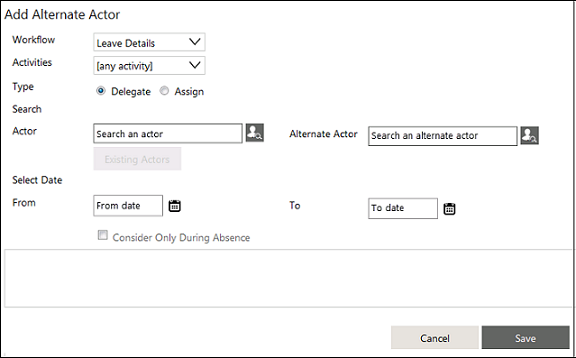
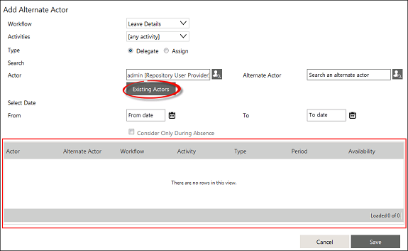

No
An actor is a user who is responsible for acting on a task or an activity. You can assign alternate actors to a workflow who will have rights to approve or reject an activity in the absence of the original actor.
You can configure an alternate actor in one of the following three different ways:
While configuring an alternate actor in Inbox or Enterprise Console menu, the Add Alternate Actor dialog box does not contain the Activities field. While configuring an alternate actor in Inbox, the logged in user is considered as the actor.
Steps to set an Alternate Actor in the Process Designer:
The Alternate Actors dialog box appears.
This window lists all the alternate actors that are added.
The Add Alternate Actor dialog box appears.

Only one type of setting (Delegate or Assign) is allowed for an Actor, Alternate Actor, and Workflow combination.
In an upgraded environment where Delegate and Assign is already set for an actor, Delegate takes precedence over Assign. .
The User Lookup dialog box appears.
The same user cannot be set for both Actor and Alternate Actor.
Click Existing Actors to view the list of all the existing alternate actors of the selected actor. The list of existing actors and the associated details get populated in the grid at the bottom section of the dialog box as shown in the following image:

Note that the From date cannot be older than the current date.
The Alternate Actors window opens showing the newly added alternate actor.
For more information about assigning Alternate Actors from the Work items list window, see Work items list Control.
For more information about how to set an Actor to perform a human task, see Human Activities in the Developer Guide.
See Also: Alternate Actors topic in User Guide.